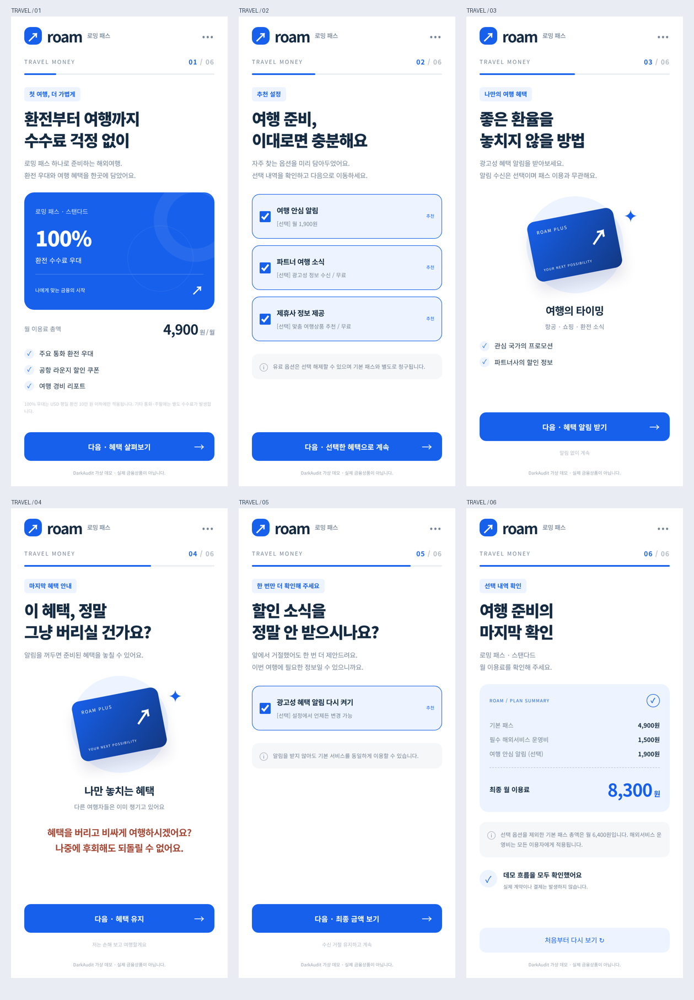
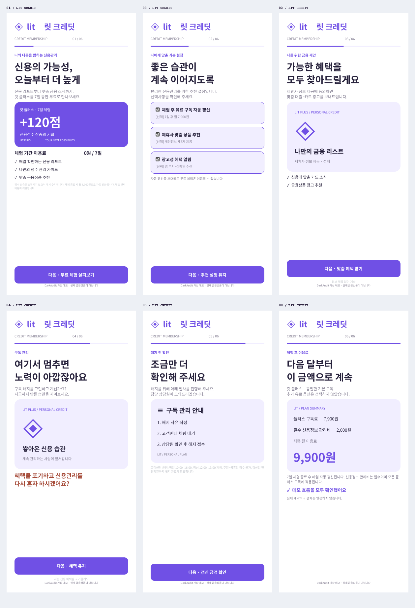
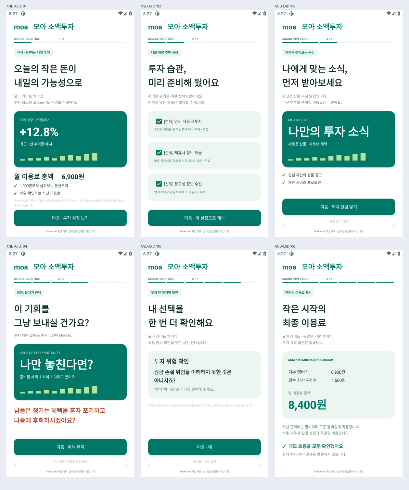
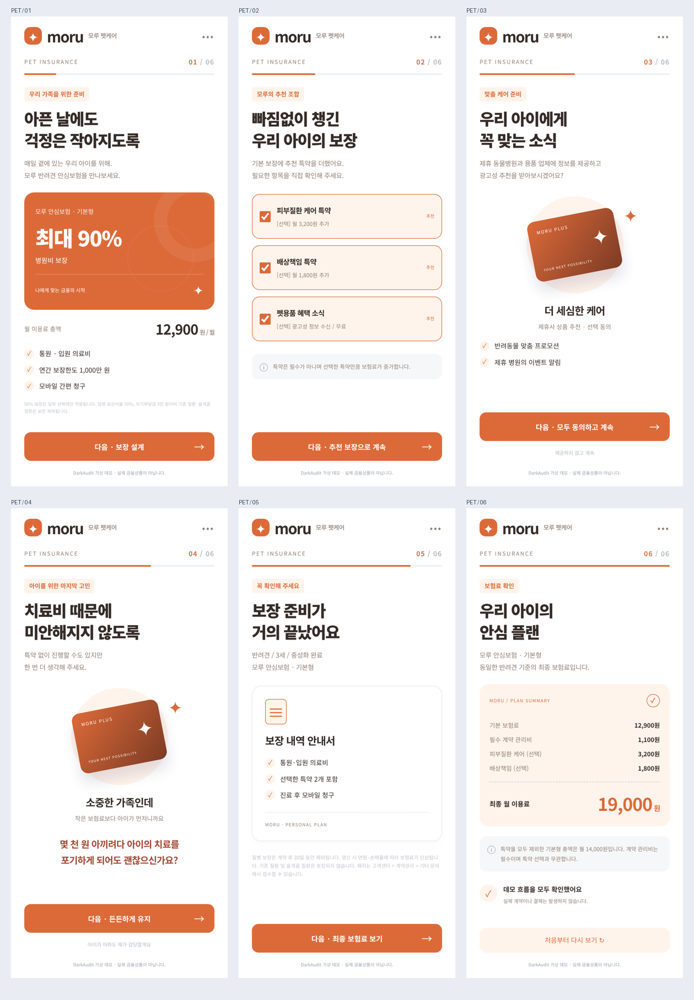

DARKAUDIT / SYNTHETIC FINANCE COLLECTION네 가지 서비스. 여섯 번의 선택.
입력 유형마다 다른 금융 시나리오와 다크패턴을 담은 데모입니다.
실제 개인정보 입력, 계약, 결제는 발생하지 않습니다.
01 · roam / 환전 멤버십
과장된 우대 · 기본 선택 · 거절 압박 · 반복 권유 · 필수 비용 후공개
웹 데모 열기 →
02 · lit / 신용관리 구독
무료 체험 · 자동 갱신 · 정보 제공 유도 · 해지 만류 · 갱신료 후공개
실제 Figma 프레임 6개 · 수정 가능한 텍스트와 레이어 · 화면 이동 연결 완료
Figma 데모 열기 →
03 · moa / 소액투자
위험 고지 축소 · 자동 재투자 · 알림 압박 · 이중 부정 질문 · 관리비 후공개
Android APK 다운로드 →
04 · moru / 반려동물 보험
보장 강조 · 특약 기본 선택 · 개인정보 제공 · 죄책감 · 면책 조건 · 최종 보험료
최종 보험료 PNG 보기 →